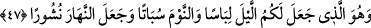

Zâhirdeki sultân-ı a‘zamda câmi olmak ve ihâta bakımından insân-ı kâmilin sûretidir.
47. Sizin için geceyi örtü, uykuyu istirahat kılan, gündüzü de dağılıp çalışma
(zamanı) yapan, O’dur.
“Sizin için geceyi örtü,” elbisenin örttüğü gibi karanlığıyla sizi örten bir elbise/örtü
kılandır. Burada örtme konusunda gece karanlığı elbiseye benzetilmiştir.
“
”ün asıl anlamı bir şeyi örtmek demektir. İnsanın ayıp yerlerini örten şeye de “
elbise” denmiştir. “Onlar sizin elbiseniz, siz de onların elbisesisiniz.” (el-
Bakara, 2/187) âyetinde birbirlerini kötülükten alıkoydukları için eşler birbirleri için
elbise kılınmıştır. “Takvâ elbisesi, işte o daha hayırlıdır.” (el-A‘râf, 7/26) âyetinde
temsil ve teşbih yoluyla takvâ elbise yapılmıştır.
Eğer “Gece karanlığı elbise kılınınca, gece namazında avret yerlerini örtmeye gerek
kalmaz.” dersen, şöyle cevap veririm: Bu hususta karanlığın örtmesine îtibar edilmez.
Çünkü elbise ve benzeri şeylerle avret yerlerini örtmek, namazın hakkıdır. Bu da
karanlıkta ve aydınlıkta eşittir, devamlıdır.
“Uykuyu istirahat kılan,” Uyku, vücuttaki buhar rutûbetinin yükselmesiyle dimağdaki
sinirlerin gevşemesidir. “
” çalışmayı ve işi kesmek demektir. “
” (el-A‘râf,
7/163) çalışmayı kestikleri gün demektir. Bu yüzden bu güne “
” denilmiştir. Ya da
bu ismin verilmesi o gün haftanın günlerinin sona erdiğinden dolayıdır. Çünkü Allah
Teâlâ gökleri ve yerleri yaratmaya pazar günü (
) başlamış ve altı günde
yaratmıştır. Cumartesi günü bu işi kesmiş ve sona erdirmiştir. Nitekim el-Müfredât’ta
böyle geçmektedir.
Âyetin mânası şöyledir: Allah, genellikle geceleyin vukû bulan uykuyu, bedenlerin
uyanıklığa mahsus iş ve meşguliyetlerden kesilmesi ve dinlenmesi için bir istirahat
zamanı kılmıştır. Ya da Allah, uykuyu bir ölüm kıldı. Buna göre “kesmek”, ölüm
anlamına gelen “
” ile ifâde edildi. Çünkü uyku ile ölüm arasında hayâtın kesilmesi
bakımından benzerlik vardır. “O Allah sizi geceleyin öldürür (gibi uyutur)” (el-
En‘âm, 6/60) âyeti de bu anlamadır. Dolayısıyla ölüm ve uyku aynı cinstendir. Ancak
ölüm tamamen kesilme/ayrılmadır. Yâni ruhun ışığının bedenin zâhirinden ve bâtınından
çekilmesidir. Uyku ise eksik bir kesilme/ayrılmadır. Yâni ruhun ışığının bedenin
bâtınından değil zâhirinden çekilmesidir. “
” ölü demektir. Çünkü hayâtı kesilmiş
ve sona ermiştir. Bayılan hasta için de bu kelime kullanılmıştır. Çünkü böyle bir
kimsenin aklı ve seçme melekesi yok olmuştur. İşte fukahanın: “Vebâlı, felç olmuş ve
bayılan kimselerin, öldüklerinin kesinlik kazanması için üzerlerinden bir gün bir gece
geçmeden defninde acele etmemek gerekir.” demeleri buna dayanır.